F.40 Regular Polygons and Nested Radicals — Folios
Archival manuscript scans and diplomatic transcriptions from seelig ’s
notebooks for F.40 (Regular Polygons and Nested Radicals) (SeeligNotebooks ).
Folio 0239 (Page 1 of 18): Edge-Doubling Recursion for Unit-Circle Polygons (2-001)
[Folio 0239]
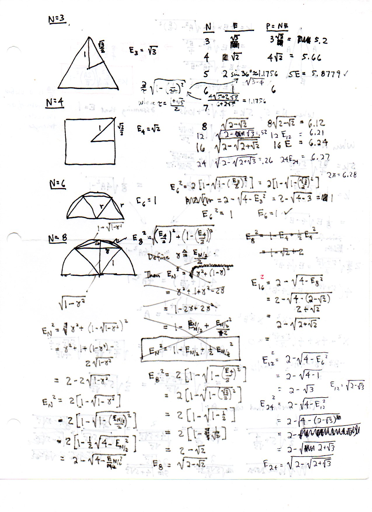
Folio 0239 0239.jpg resources/seelig/40_polygons
Diplomatic Mathematical & Geometric Transcription
Diplomatic Transcription — Folio 0239 (0239.jpg
Derives \(E_N = \sqrt{2-\sqrt{4-E_{N/2}^2}}\) and apothem \(r_N = \frac{1}{2}\sqrt{4-E_N^2}\) from the sagitta right triangle in a unit circle (\(R=1\) ).
\[E_N = 2\sin\frac{\pi}{N} = \sqrt{2 - \sqrt{4 - E_{N/2}^2}}, \qquad r_N = \cos\frac{\pi}{N} = \frac{1}{2}\sqrt{4 - E_N^2}\]
Editorial & Symbolic Notes
Archival scan 0239.jpg F.40 Regular Polygons and Nested Radicals (Page 1 of 18). Companion OpenDocument worksheet(s): Polygon Table Golden Triangle IV.11 IV.15 IV.16 XIII.9 XIII.10
Folio 0240 (Page 2 of 18): Square & Octagon Doubling Family (2-002)
[Folio 0240]
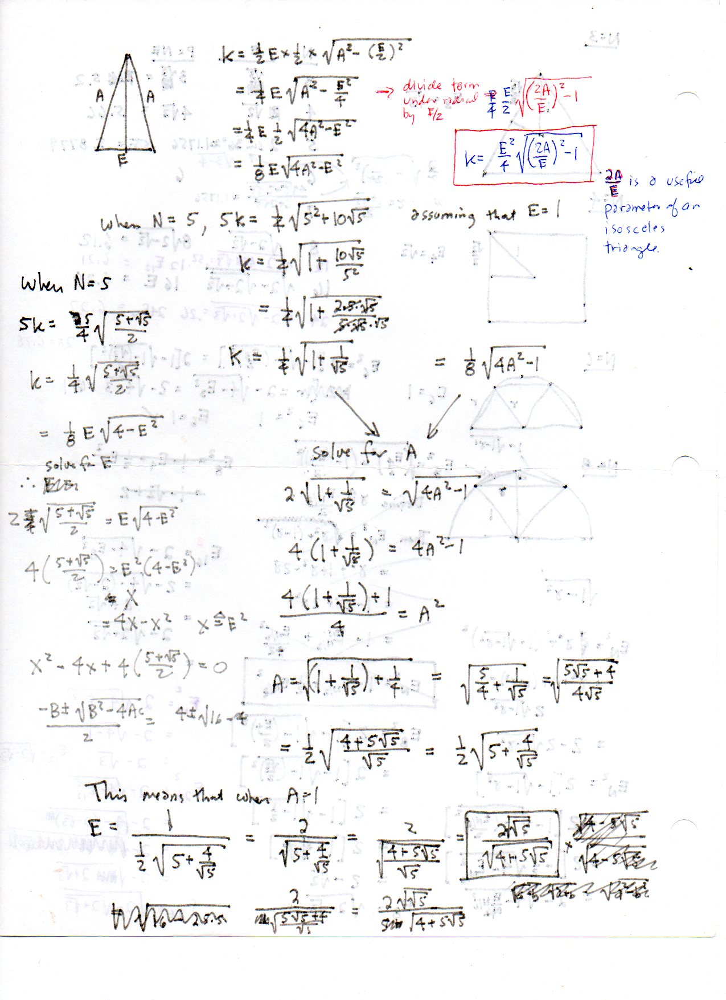
Folio 0240 0240.jpg resources/seelig/40_polygons
Diplomatic Mathematical & Geometric Transcription
Diplomatic Transcription — Folio 0240 (0240.jpg
Evaluates nested radicals for \(N = 4, 8, 16, 32, 64\) starting from \(E_4 = \sqrt{2}\) .
\[E_{10} = \phi - 1 = \sqrt{2 - \phi}, \qquad E_5 = \sqrt{3 - \phi}, \qquad E_{15} = 2\sin 12^\circ = \frac{1}{4}\left(\sqrt{10 + 2\sqrt{5}} + \sqrt{3} - \sqrt{15}\right)\]
Editorial & Symbolic Notes
Archival scan 0240.jpg F.40 Regular Polygons and Nested Radicals (Page 2 of 18). Companion OpenDocument worksheet(s): Polygon Table Golden Triangle IV.11 IV.15 IV.16 XIII.9 XIII.10
Folio 0241 (Page 3 of 18): Hexagon & Dodecagon Doubling Family (2-003)
[Folio 0241]
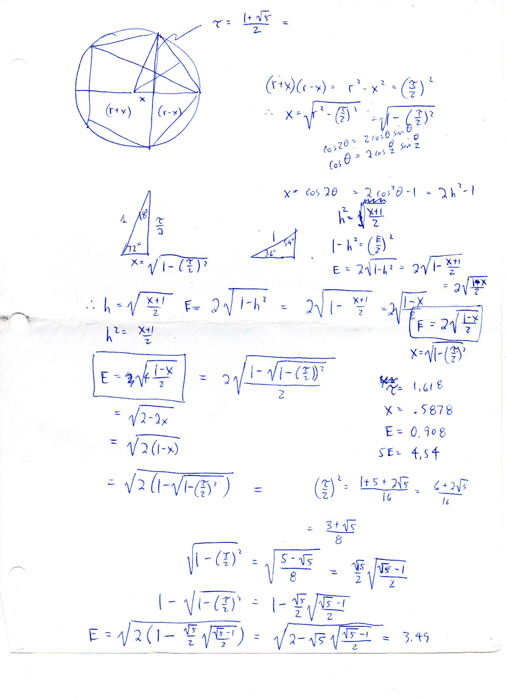
Folio 0241 0241.jpg resources/seelig/40_polygons
Diplomatic Mathematical & Geometric Transcription
Diplomatic Transcription — Folio 0241 (0241.jpg
Evaluates nested radicals for \(N = 3, 6, 12, 24, 48\) starting from \(E_3 = \sqrt{3}\) and \(E_6 = 1\) .
\[E_N = 2\sin\frac{\pi}{N} = \sqrt{2 - \sqrt{4 - E_{N/2}^2}}, \qquad r_N = \cos\frac{\pi}{N} = \frac{1}{2}\sqrt{4 - E_N^2}\]
Editorial & Symbolic Notes
Archival scan 0241.jpg F.40 Regular Polygons and Nested Radicals (Page 3 of 18). Companion OpenDocument worksheet(s): Polygon Table Golden Triangle IV.11 IV.15 IV.16 XIII.9 XIII.10
Folio 0242 (Page 4 of 18): Pentagon & Decagon Golden Ratio Radicals (2-004)
[Folio 0242]
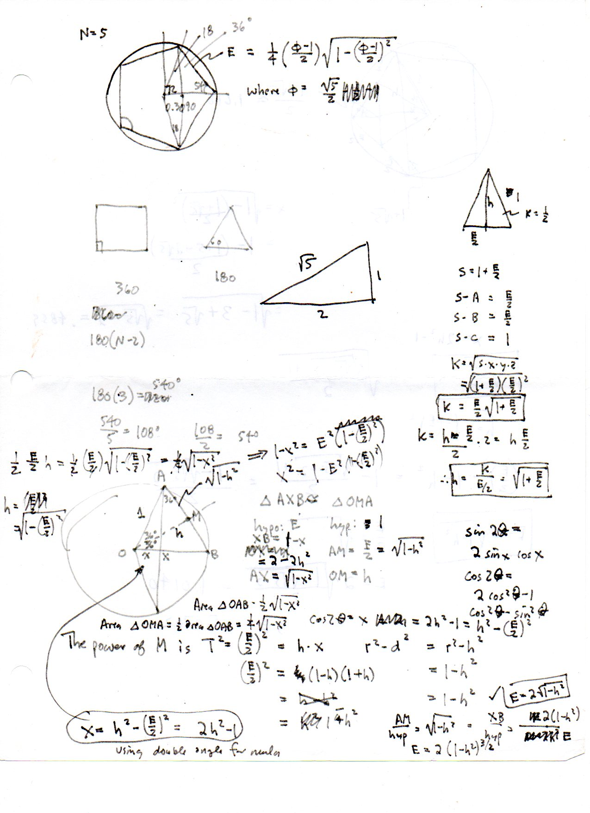
Folio 0242 0242.jpg resources/seelig/40_polygons
Diplomatic Mathematical & Geometric Transcription
Diplomatic Transcription — Folio 0242 (0242.jpg
Expresses \(E_{10} = \phi^{-1} = \sqrt{2-\phi}\) , \(E_5 = \sqrt{3-\phi}\) , and \(E_{20} = \sqrt{2-\sqrt{2+\phi}}\) in terms of \(\phi = \frac{1+\sqrt{5}}{2}\) .
\[E_{10} = \phi - 1 = \sqrt{2 - \phi}, \qquad E_5 = \sqrt{3 - \phi}, \qquad E_{15} = 2\sin 12^\circ = \frac{1}{4}\left(\sqrt{10 + 2\sqrt{5}} + \sqrt{3} - \sqrt{15}\right)\]
Editorial & Symbolic Notes
Archival scan 0242.jpg F.40 Regular Polygons and Nested Radicals (Page 4 of 18). Companion OpenDocument worksheet(s): Polygon Table Golden Triangle IV.11 IV.15 IV.16 XIII.9 XIII.10
Folio 0243 (Page 5 of 18): Master Polygon Reference Table (2-005)
[Folio 0243]
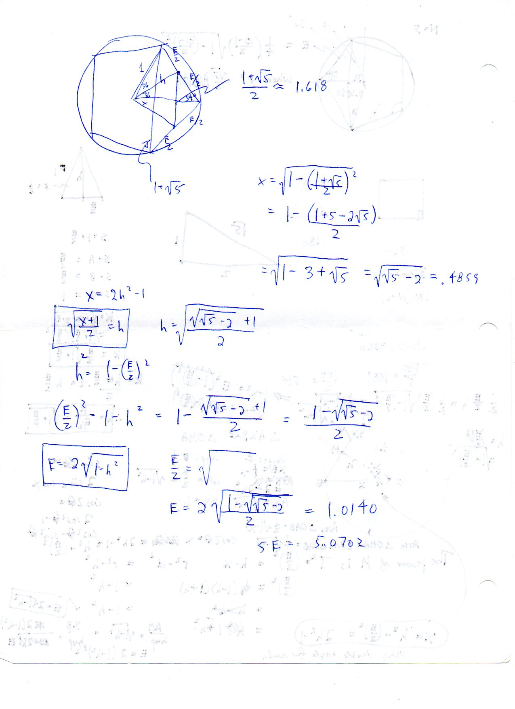
Folio 0243 0243.jpg resources/seelig/40_polygons
Diplomatic Mathematical & Geometric Transcription
Diplomatic Transcription — Folio 0243 (0243.jpg
Compiles \(N, \theta_N, E_N, r_N\) , and perimeter \(N E_N \to 2\pi\) across all constructible families.
\[E_N = 2\sin\frac{\pi}{N} = \sqrt{2 - \sqrt{4 - E_{N/2}^2}}, \qquad r_N = \cos\frac{\pi}{N} = \frac{1}{2}\sqrt{4 - E_N^2}\]
Editorial & Symbolic Notes
Archival scan 0243.jpg F.40 Regular Polygons and Nested Radicals (Page 5 of 18). Companion OpenDocument worksheet(s): Polygon Table Golden Triangle IV.11 IV.15 IV.16 XIII.9 XIII.10
Folio 0244 (Page 6 of 18): Regular Pentadecagon E_15 Derivation (2-006, FWS 4/20/2015)
[Folio 0244]
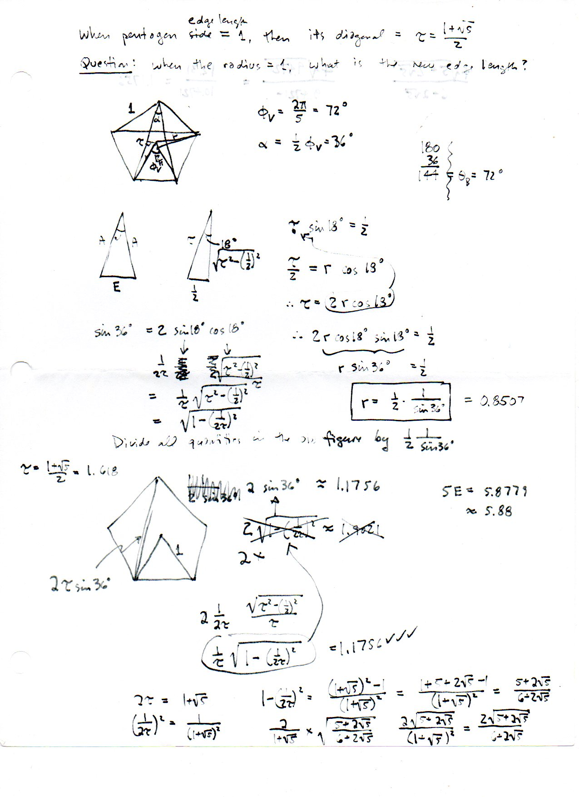
Folio 0244 0244.jpg resources/seelig/40_polygons
Diplomatic Mathematical & Geometric Transcription
Diplomatic Transcription — Folio 0244 (0244.jpg
Computes \(E_{15} = 2\sin 12^\circ \approx 0.415823\) using \(12^\circ = 30^\circ - 18^\circ\) and Euclid IV.16.
\[E_{10} = \phi - 1 = \sqrt{2 - \phi}, \qquad E_5 = \sqrt{3 - \phi}, \qquad E_{15} = 2\sin 12^\circ = \frac{1}{4}\left(\sqrt{10 + 2\sqrt{5}} + \sqrt{3} - \sqrt{15}\right)\]
Editorial & Symbolic Notes
Archival scan 0244.jpg F.40 Regular Polygons and Nested Radicals (Page 6 of 18). Companion OpenDocument worksheet(s): Polygon Table Golden Triangle IV.11 IV.15 IV.16 XIII.9 XIII.10
Folio 0245 (Page 7 of 18): Stafford’s Exact Radical Table for pi/30 (2-007)
[Folio 0245]
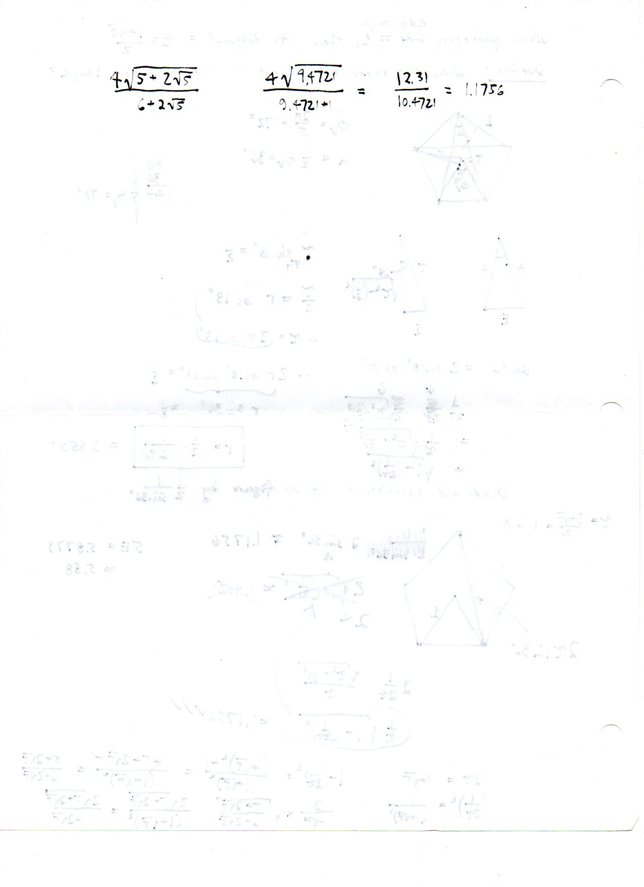
Folio 0245 0245.jpg resources/seelig/40_polygons
Diplomatic Mathematical & Geometric Transcription
Diplomatic Transcription — Folio 0245 (0245.jpg
Cites James Stafford’s trigonometric radical table for multiples of \(6^\circ = \pi/30\) to verify \(\sin 12^\circ\) and \(\cos 12^\circ\) .
\[E_N = 2\sin\frac{\pi}{N} = \sqrt{2 - \sqrt{4 - E_{N/2}^2}}, \qquad r_N = \cos\frac{\pi}{N} = \frac{1}{2}\sqrt{4 - E_N^2}\]
Editorial & Symbolic Notes
Archival scan 0245.jpg F.40 Regular Polygons and Nested Radicals (Page 7 of 18). Companion OpenDocument worksheet(s): Polygon Table Golden Triangle IV.11 IV.15 IV.16 XIII.9 XIII.10
Folio 0246 (Page 8 of 18): Pentadecagon Apothem & Area (2-008)
[Folio 0246]
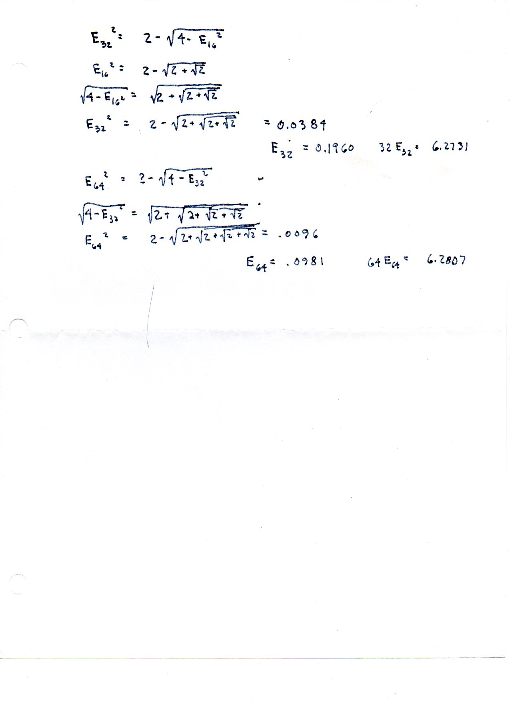
Folio 0246 0246.jpg resources/seelig/40_polygons
Diplomatic Mathematical & Geometric Transcription
Diplomatic Transcription — Folio 0246 (0246.jpg
Simplifies the nested radical for \(r_{15} = \cos 12^\circ\) and the area \(K_{15} = \frac{15}{2}E_{15}r_{15}\) .
\[E_{10} = \phi - 1 = \sqrt{2 - \phi}, \qquad E_5 = \sqrt{3 - \phi}, \qquad E_{15} = 2\sin 12^\circ = \frac{1}{4}\left(\sqrt{10 + 2\sqrt{5}} + \sqrt{3} - \sqrt{15}\right)\]
Editorial & Symbolic Notes
Archival scan 0246.jpg F.40 Regular Polygons and Nested Radicals (Page 8 of 18). Companion OpenDocument worksheet(s): Polygon Table Golden Triangle IV.11 IV.15 IV.16 XIII.9 XIII.10
Folio 0247 (Page 9 of 18): 30-gon & 60-gon Doubling Steps (2-009)
[Folio 0247]
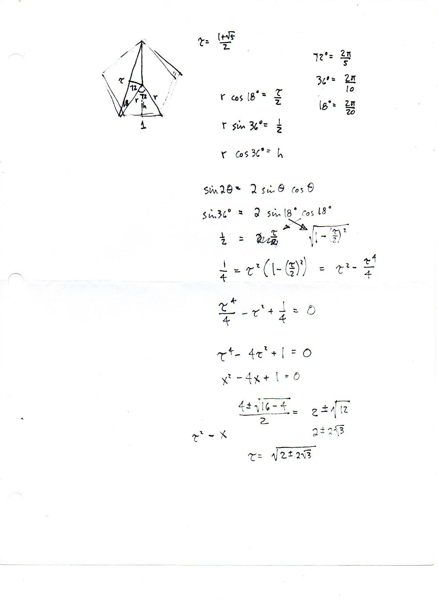
Folio 0247 0247.jpg resources/seelig/40_polygons
Diplomatic Mathematical & Geometric Transcription
Diplomatic Transcription — Folio 0247 (0247.jpg
Applies the edge-doubling recursion to \(E_{15}\) to obtain \(E_{30}\) and \(E_{60}\) .
\[E_N = 2\sin\frac{\pi}{N} = \sqrt{2 - \sqrt{4 - E_{N/2}^2}}, \qquad r_N = \cos\frac{\pi}{N} = \frac{1}{2}\sqrt{4 - E_N^2}\]
Editorial & Symbolic Notes
Archival scan 0247.jpg F.40 Regular Polygons and Nested Radicals (Page 9 of 18). Companion OpenDocument worksheet(s): Polygon Table Golden Triangle IV.11 IV.15 IV.16 XIII.9 XIII.10
Folio 0248 (Page 10 of 18): Inscribed Triangle & Square Constructions (001)
[Folio 0248]
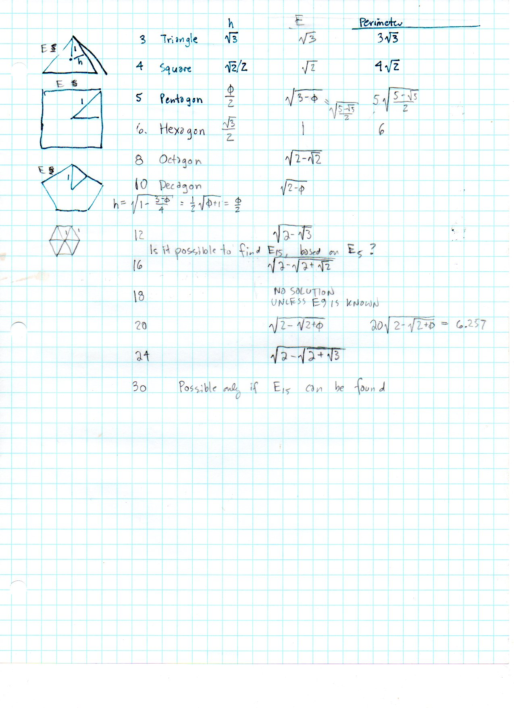
Folio 0248 0248.jpg resources/seelig/40_polygons
Diplomatic Mathematical & Geometric Transcription
Diplomatic Transcription — Folio 0248 (0248.jpg
Compass diagrams of the inscribed equilateral triangle (\(E_3 = \sqrt{3}R\) ) and square (\(E_4 = \sqrt{2}R\) ).
\[E_{10} = \phi - 1 = \sqrt{2 - \phi}, \qquad E_5 = \sqrt{3 - \phi}, \qquad E_{15} = 2\sin 12^\circ = \frac{1}{4}\left(\sqrt{10 + 2\sqrt{5}} + \sqrt{3} - \sqrt{15}\right)\]
Editorial & Symbolic Notes
Archival scan 0248.jpg F.40 Regular Polygons and Nested Radicals (Page 10 of 18). Companion OpenDocument worksheet(s): Polygon Table Golden Triangle IV.11 IV.15 IV.16 XIII.9 XIII.10
Folio 0249 (Page 11 of 18): Inscribed Pentagon & Decagon Geometry (002)
[Folio 0249]
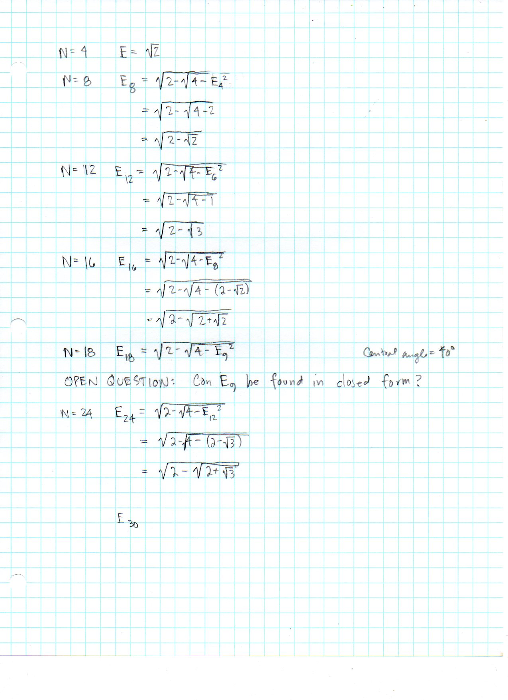
Folio 0249 0249.jpg resources/seelig/40_polygons
Diplomatic Mathematical & Geometric Transcription
Diplomatic Transcription — Folio 0249 (0249.jpg
Shows Ptolemy’s / Euclid XIII.10 relation \(E_5^2 = R^2 + E_{10}^2\) inside the unit circle.
\[E_N = 2\sin\frac{\pi}{N} = \sqrt{2 - \sqrt{4 - E_{N/2}^2}}, \qquad r_N = \cos\frac{\pi}{N} = \frac{1}{2}\sqrt{4 - E_N^2}\]
Editorial & Symbolic Notes
Archival scan 0249.jpg F.40 Regular Polygons and Nested Radicals (Page 11 of 18). Companion OpenDocument worksheet(s): Polygon Table Golden Triangle IV.11 IV.15 IV.16 XIII.9 XIII.10
Folio 0250 (Page 12 of 18): Golden Triangle & Gnomon Decomposition of the Decagon (003)
[Folio 0250]
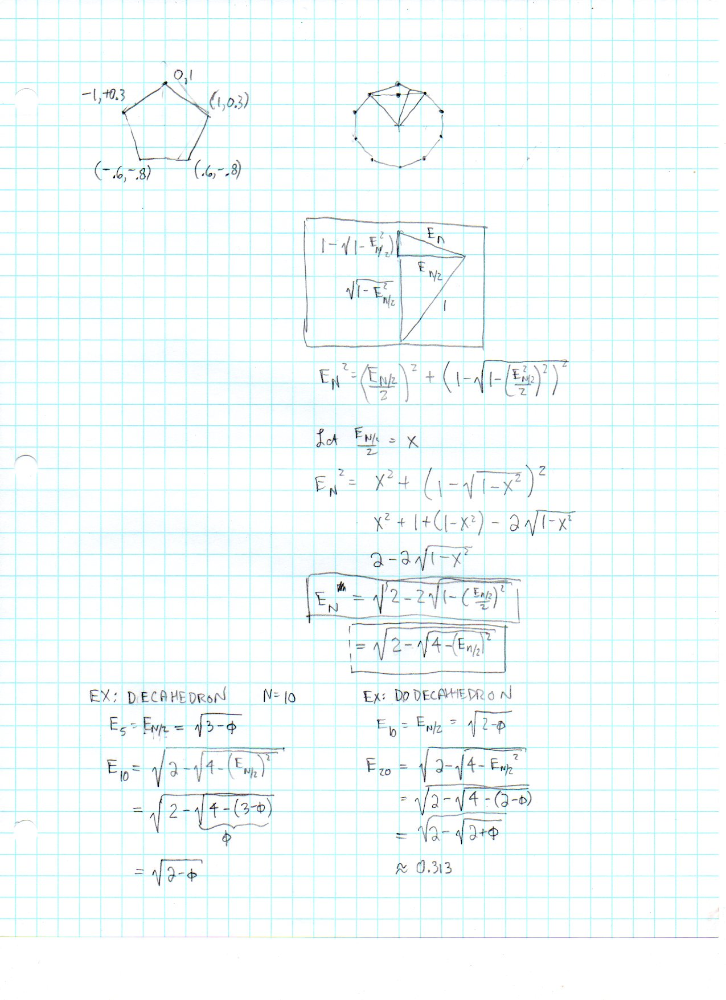
Folio 0250 0250.jpg resources/seelig/40_polygons
Diplomatic Mathematical & Geometric Transcription
Diplomatic Transcription — Folio 0250 (0250.jpg
Partitions the regular decagon into ten acute \(72^\circ\text{--}72^\circ\text{--}36^\circ\) golden triangles.
\[E_{10} = \phi - 1 = \sqrt{2 - \phi}, \qquad E_5 = \sqrt{3 - \phi}, \qquad E_{15} = 2\sin 12^\circ = \frac{1}{4}\left(\sqrt{10 + 2\sqrt{5}} + \sqrt{3} - \sqrt{15}\right)\]
Editorial & Symbolic Notes
Archival scan 0250.jpg F.40 Regular Polygons and Nested Radicals (Page 12 of 18). Companion OpenDocument worksheet(s): Polygon Table Golden Triangle IV.11 IV.15 IV.16 XIII.9 XIII.10
Folio 0251 (Page 13 of 18): Chord Length & Central Angle Identities (004)
[Folio 0251]
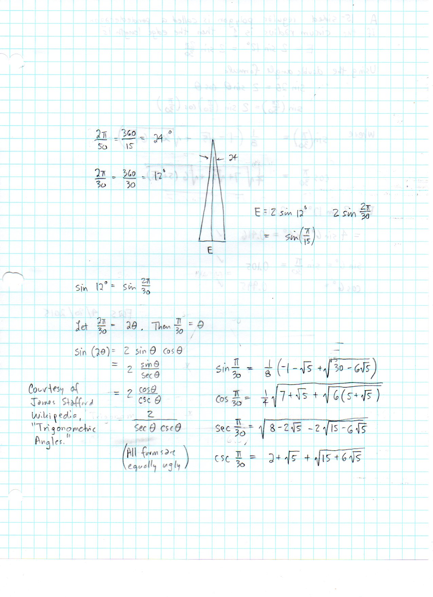
Folio 0251 0251.jpg resources/seelig/40_polygons
Diplomatic Mathematical & Geometric Transcription
Diplomatic Transcription — Folio 0251 (0251.jpg
Relates chord length \(c(\theta) = 2R\sin(\theta/2)\) to the sagitta \(s = R - \sqrt{R^2 - (c/2)^2}\) .
\[E_N = 2\sin\frac{\pi}{N} = \sqrt{2 - \sqrt{4 - E_{N/2}^2}}, \qquad r_N = \cos\frac{\pi}{N} = \frac{1}{2}\sqrt{4 - E_N^2}\]
Editorial & Symbolic Notes
Archival scan 0251.jpg F.40 Regular Polygons and Nested Radicals (Page 13 of 18). Companion OpenDocument worksheet(s): Polygon Table Golden Triangle IV.11 IV.15 IV.16 XIII.9 XIII.10
Folio 0252 (Page 14 of 18): Polygon Perimeter & Area Convergence to pi (005)
[Folio 0252]
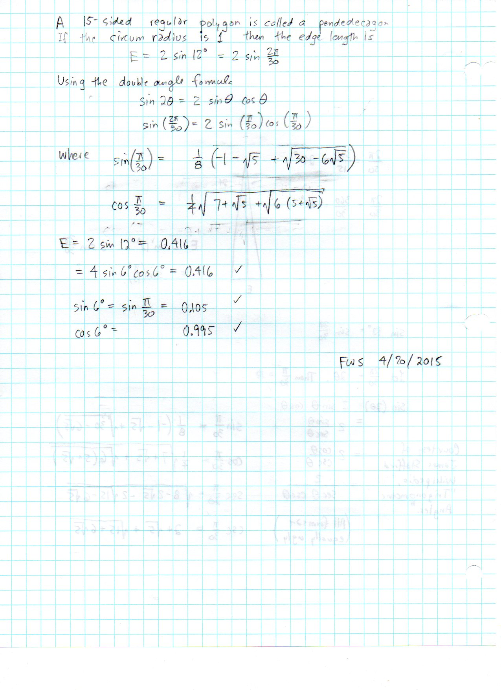
Folio 0252 0252.jpg resources/seelig/40_polygons
Diplomatic Mathematical & Geometric Transcription
Diplomatic Transcription — Folio 0252 (0252.jpg
Tabulates \(\pi_N = \frac{N}{2}E_N\) and \(A_N = \frac{N}{2}E_N r_N\) for increasing \(N\) .
\[E_{10} = \phi - 1 = \sqrt{2 - \phi}, \qquad E_5 = \sqrt{3 - \phi}, \qquad E_{15} = 2\sin 12^\circ = \frac{1}{4}\left(\sqrt{10 + 2\sqrt{5}} + \sqrt{3} - \sqrt{15}\right)\]
Editorial & Symbolic Notes
Archival scan 0252.jpg F.40 Regular Polygons and Nested Radicals (Page 14 of 18). Companion OpenDocument worksheet(s): Polygon Table Golden Triangle IV.11 IV.15 IV.16 XIII.9 XIII.10
Folio 0253 (Page 15 of 18): Regular Enneagon (N = 9) Angle-Chasing Attempt — Page 1 (006)
[Folio 0253]
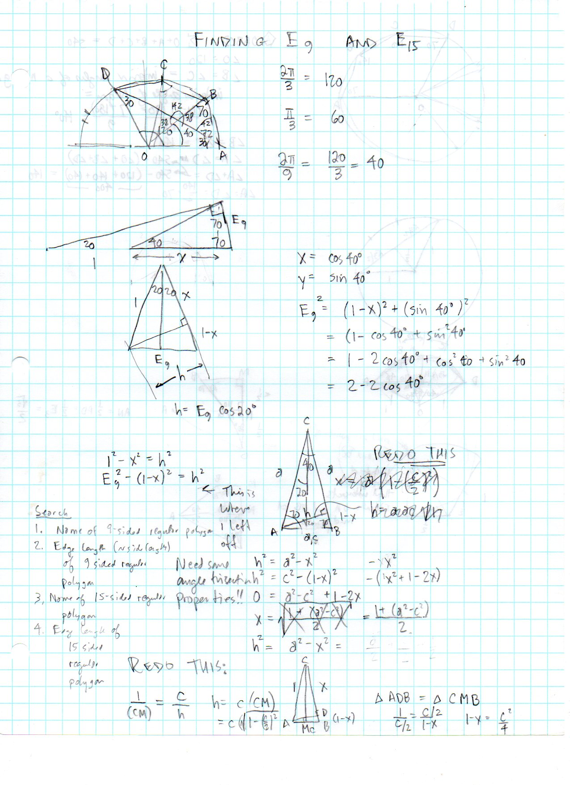
Folio 0253 0253.jpg resources/seelig/40_polygons
Diplomatic Mathematical & Geometric Transcription
Diplomatic Transcription — Folio 0253 (0253.jpg
Investigates chord relationships in the regular 9-gon (\(20^\circ\) central half-angle).
\[E_N = 2\sin\frac{\pi}{N} = \sqrt{2 - \sqrt{4 - E_{N/2}^2}}, \qquad r_N = \cos\frac{\pi}{N} = \frac{1}{2}\sqrt{4 - E_N^2}\]
Editorial & Symbolic Notes
Archival scan 0253.jpg F.40 Regular Polygons and Nested Radicals (Page 15 of 18). Companion OpenDocument worksheet(s): Polygon Table Golden Triangle IV.11 IV.15 IV.16 XIII.9 XIII.10
Folio 0254 (Page 16 of 18): Regular Enneagon (N = 9) Diagonal Relations — Page 2 (007)
[Folio 0254]
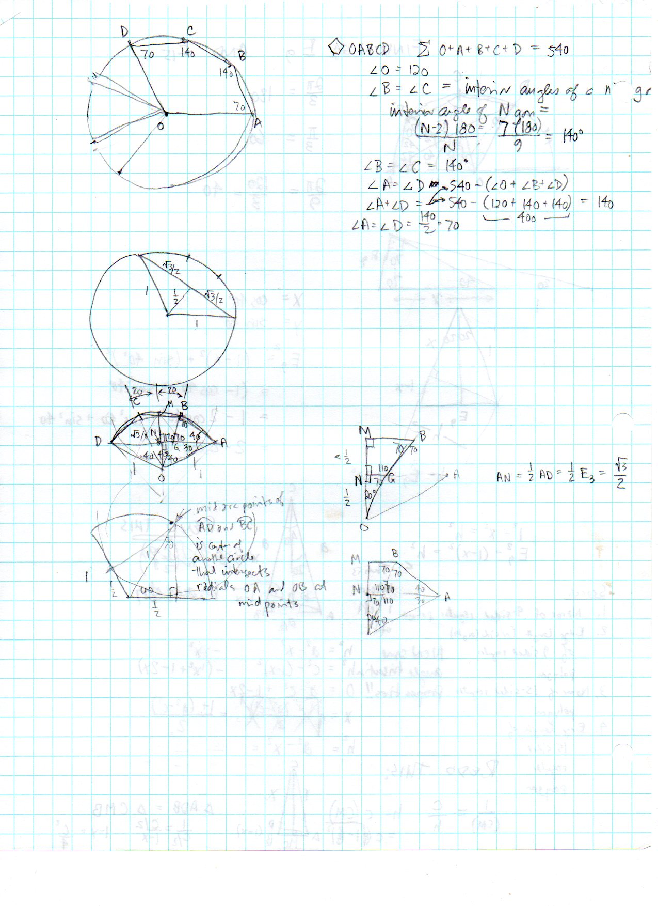
Folio 0254 0254.jpg resources/seelig/40_polygons
Diplomatic Mathematical & Geometric Transcription
Diplomatic Transcription — Folio 0254 (0254.jpg
Records the three diagonal lengths of the regular enneagon and notes the irreducible cubic \(x^3 - 3x + 1 = 0\) .
\[E_{10} = \phi - 1 = \sqrt{2 - \phi}, \qquad E_5 = \sqrt{3 - \phi}, \qquad E_{15} = 2\sin 12^\circ = \frac{1}{4}\left(\sqrt{10 + 2\sqrt{5}} + \sqrt{3} - \sqrt{15}\right)\]
Editorial & Symbolic Notes
Archival scan 0254.jpg F.40 Regular Polygons and Nested Radicals (Page 16 of 18). Companion OpenDocument worksheet(s): Polygon Table Golden Triangle IV.11 IV.15 IV.16 XIII.9 XIII.10
Folio 0255 (Page 17 of 18): Cartesian Cevian Length Sheet — Part 1 (009)
[Folio 0255]
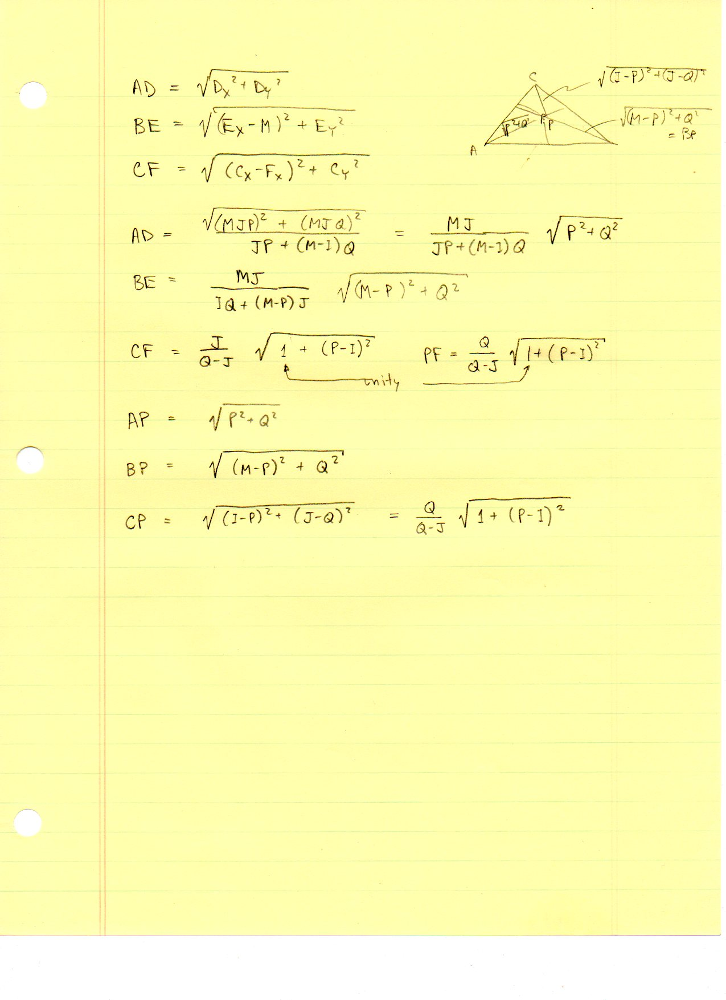
Folio 0255 0255.jpg resources/seelig/40_polygons
Diplomatic Mathematical & Geometric Transcription
Diplomatic Transcription — Folio 0255 (0255.jpg
Derives cevian segment lengths in a Cartesian triangle frame.
\[E_N = 2\sin\frac{\pi}{N} = \sqrt{2 - \sqrt{4 - E_{N/2}^2}}, \qquad r_N = \cos\frac{\pi}{N} = \frac{1}{2}\sqrt{4 - E_N^2}\]
Editorial & Symbolic Notes
Archival scan 0255.jpg F.40 Regular Polygons and Nested Radicals (Page 17 of 18). Companion OpenDocument worksheet(s): Polygon Table Golden Triangle IV.11 IV.15 IV.16 XIII.9 XIII.10
Folio 0256 (Page 18 of 18): Cartesian Cevian Length Sheet — Part 2 (010)
[Folio 0256]
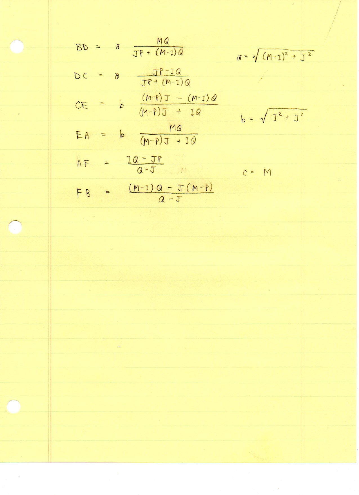
Folio 0256 0256.jpg resources/seelig/40_polygons
Diplomatic Mathematical & Geometric Transcription
Diplomatic Transcription — Folio 0256 (0256.jpg
Completes the algebraic expansion of the Cartesian cevian length formula.
\[E_{10} = \phi - 1 = \sqrt{2 - \phi}, \qquad E_5 = \sqrt{3 - \phi}, \qquad E_{15} = 2\sin 12^\circ = \frac{1}{4}\left(\sqrt{10 + 2\sqrt{5}} + \sqrt{3} - \sqrt{15}\right)\]
Editorial & Symbolic Notes
Archival scan 0256.jpg F.40 Regular Polygons and Nested Radicals (Page 18 of 18). Companion OpenDocument worksheet(s): Polygon Table Golden Triangle IV.11 IV.15 IV.16 XIII.9 XIII.10